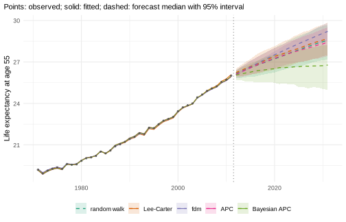
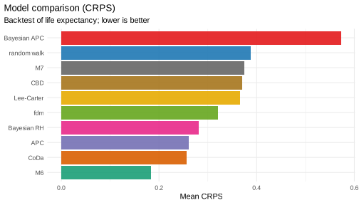
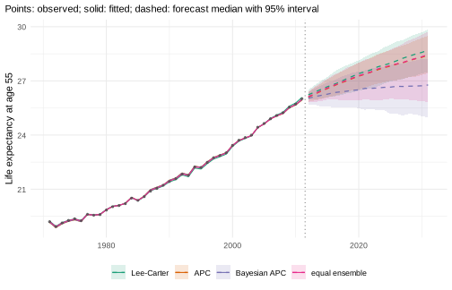

This vignette is precomputed
(dev/precompute-vignettes.R) because the Bayesian model and
the backtests take several minutes.
mortensor does not have a preferred model. It implements some models
directly and wraps others from established packages (demography, StMoMo,
bamp, forecast), and all of them are fitted with mt_fit(),
forecast with mt_forecast() and return simulated paths in
the same form. They can therefore be compared in the same backtest and
combined into ensembles of any composition. This vignette shows both, on
one population, and leaves smoothing and the jump-off aside (see their
own vignettes).
The models
| Model | Constructor | Source | Idea |
|---|---|---|---|
| Random walk with drift | rwd() |
mortensor | each log rate continues its average change; the standard benchmark of forecasting |
| Lee-Carter | lee_carter() |
mortensor | one time index, with an age pattern of change (Lee and Carter 1992);
rotate = TRUE moves the decline to older ages as life
expectancy rises (Li, Lee and Gerland 2013) |
| Compositional data model | coda() |
mortensor | the Lee-Carter model of the life-table distribution of deaths (Oeppen 2008; Bergeron-Boucher et al. 2017) |
| Functional demographic model | hyndman_ullah() |
demography | rates smoothed over age, several components (Hyndman and Ullah 2007) |
| Lee-Carter, CBD, APC, Renshaw-Haberman, M6, M7, M8 |
stmomo("lc"), "cbd", "apc",
"rh", "m6", "m7",
"m8"
|
StMoMo | generalised age-period-cohort models (Cairns et al. 2009; Villegas et al. 2018) |
| Bayesian Lee-Carter, RH, APC, CBD, M6 |
stanmomo("lc"), "rh", … |
StanMoMo | the StMoMo models fitted with Stan, with posterior uncertainty of all parameters (Barigou et al. 2023) |
| Bayesian APC | apc_bayes() |
bamp | age, period and cohort effects with random-walk priors (Schmid and Held 2007) |
| Time series per age |
arima_series(), ets_series()
|
forecast | a separate ARIMA or exponential smoothing model for each age |
| Tensor decomposition | tucker3() |
mortensor | age, period and stratum factors |
| Several populations |
li_lee(), product_ratio(),
coda(coherent = TRUE), cause_shares(),
coda_causes()
|
mortensor | strata pooled around a common trend, or causes of death as shares |
| Coherent functional demographic model | coherent_fdm() |
demography | product-ratio method with functional data models (Hyndman, Booth and Yasmeen 2013) |
The models for several populations are used in the applied vignettes; the “Model reference” lists the assumptions and the sources of uncertainty of every model.
One population, many models
Men in England & Wales, single years of age 55-90, 1971-2011 (Human Mortality Database, via StMoMo):
library(mortensor)
library(data.table)
ew <- as_mt_data(StMoMo::EWMaleData)
ew <- mt_regroup(mt_set_grid(ew, age = single_ages(55, 90, open = FALSE)), age = single_ages(55, 90, open = FALSE))
ew <- mt_subset(ew, periods = c(1971, 2011))
models <- list("random walk" = rwd(),
"Lee-Carter" = lee_carter(),
"fdm" = hyndman_ullah(),
"CBD" = stmomo("cbd"),
"APC" = stmomo("apc"),
"M6" = stmomo("m6"),
"M7" = stmomo("m7"),
"CoDa" = coda(),
"Bayesian APC" = apc_bayes(mcmc = mcmc_control("fast")),
"Bayesian RH" = stanmomo("rh", h_max = 20, cores = 4))
set.seed(1) # the MCMC samplers of bamp and Stan draw their seeds from R
fc <- lapply(models, function(m) mt_forecast(mt_fit(m, ew), h = 20, n_draws = 500, seed = 1))
#> Warning in report_fit_problems(diagnostics, spec$label): Functional demographic
#> model: warnings in 1 stratum/strata, for example male: smooth.demogdata()
#> failed (initial parameters not feasible); smoothed without the monotonicity
#> constraint. (see the diagnostics of the fit).The warning comes from fdm: its default smoothing over age, a spline
that must increase above age 65
(demography::smooth.demogdata()), could not be fitted to
these ages, so the rates were smoothed without that constraint. The same
warning recurs at each backtest origin below, where it is not shown
again.
Life expectancy at 55 (all models use the same ages) in 2021 and 2031:
mt_compare_forecasts(fc, periods = c(2021, 2031))
#> label period random walk Lee-Carter fdm
#> 1: male 2021 27.4 (26.4-28.2) 27.5 (26.5-28.3) 27.7 (27.4-28.0)
#> 2: male 2031 28.6 (27.2-29.7) 28.7 (27.5-29.8) 29.2 (28.5-29.8)
#> CBD APC M6 M7
#> 1: 27.5 (26.6-28.3) 27.4 (26.6-28.1) 27.2 (26.3-28.0) 27.5 (26.6-28.3)
#> 2: 28.7 (27.6-29.7) 28.4 (27.4-29.5) 28.1 (26.8-29.0) 28.8 (27.7-29.9)
#> CoDa Bayesian APC Bayesian RH
#> 1: 27.7 (26.6-28.9) 26.6 (25.4-27.6) 27.5 (26.4-28.3)
#> 2: 29.4 (27.7-30.8) 26.8 (25.0-28.2) 28.5 (26.9-29.8)
mt_plot_compare(fc[c("random walk", "Lee-Carter", "fdm", "APC", "Bayesian APC")], data = ew)
All models forecast a further rise, at different paces and with different uncertainty. By 2031 the medians range from 26.8 to 29.4 years:
- CoDa and fdm give the highest forecasts (29.4 and 29.2 years); fdm has the narrowest interval, CoDa one of the widest.
- The period models (random walk, Lee-Carter, CBD) and M7 agree closely, at about 28.7 years.
- The cohort models APC and M6 are lower (28.4 and 28.1 years); the Bayesian RH (StanMoMo: Lee-Carter with a cohort effect, fitted with Stan) lies between them and the period models (28.5 years).
- The Bayesian APC barely moves. Its default priors
are first-order random walks for period and cohort
(
period = "rw1"), which carry the last period effect forward without a trend; only the cohorts entering the age range change the forecast (see “Bayesian age-period-cohort models with bamp” for the alternative with second-order random walks).
The width of an interval reflects what each model treats as uncertain. Whether the medians are accurate and the intervals wide enough can only be checked against data the models did not see.
Which model forecast best
A backtest from three origins, each forecasting ten years, scores the
log death rates and life expectancy at 55 (_le, in
years):
bt <- mt_compare(models, ew, origins = c(1991, 1996, 2001), h = 10, n_draws = 200, quantities = "life_expectancy")
mt_score_table(bt, metrics = c("crps", "cov95"))
#> model crps cov95 crps_le cov95_le
#> 1: random walk 0.0514 0.973 0.388 0.767
#> 2: Lee-Carter 0.0564 0.751 0.366 0.933
#> 3: fdm 0.0516 0.557 0.320 0.333
#> 4: CBD 0.0554 0.782 0.371 0.833
#> 5: APC 0.0392 0.959 0.261 1.000
#> 6: M6 0.0316 0.981 0.184 1.000
#> 7: M7 0.0523 0.816 0.375 0.800
#> 8: CoDa 0.0454 0.873 0.257 1.000
#> 9: Bayesian APC 0.0721 0.694 0.573 0.600
#> 10: Bayesian RH 0.0460 0.876 0.282 1.000
mt_plot_scores(bt, by = "model", target = "life_expectancy")
- M6 and APC forecast the rates best (CRPS 0.032 and 0.039), M6 also life expectancy, and their intervals covered the observed values.
- CoDa comes next for the rates (0.045) and forecast life expectancy as well as APC (0.257 against 0.261 years).
- The Bayesian RH follows closely, and its intervals covered well (95% coverage 0.88 for the rates).
- The period models and the random walk lie close together; the random walk forecast the single rates slightly better than Lee-Carter. M7, CBD with a cohort effect, was not more accurate than CBD here.
- fdm forecast life expectancy fairly accurately, but its intervals are far too narrow (95% coverage 0.33).
- The Bayesian APC is the least accurate: a forecast without a trend falls behind when mortality keeps declining.
Two cautions. Life expectancy is scored on 30 forecasts (3 origins times 10 years), so a coverage of 0.93 and one of 0.77 differ by five forecasts. And the ranking holds for this population and these years; in other data, a period model may forecast best.
Is the best model really better?
With three origins, a model can rank first by chance.
mt_dm_test() tests whether the mean score of a model
differs from that of a reference model by more than the origins vary
(Diebold and Mariano 1995, with the correction of Harvey, Leybourne and
Newbold 1997). Three origins are too few for this test: it would have
two degrees of freedom, and the covariance of forecasts that overlap in
their test years cannot be estimated from three values. A second
backtest of the five fastest models from 16 origins (1991-2006), five
years ahead, tests life expectancy at 55 against M6:
fast <- models[c("random walk", "Lee-Carter", "APC", "M6", "CoDa")]
bt_dm <- mt_compare(fast, ew, origins = 1991:2006, h = 5, n_draws = 200, quantities = "life_expectancy")
dm <- mt_dm_test(bt_dm, ref = "M6", targets = "life_expectancy")
dm[horizon %in% c("1", "5", "all"), list(model, horizon, score, score_ref, mean_diff, p_value)]
#> model horizon score score_ref mean_diff p_value
#> 1: random walk 1 0.09724537 0.08206846 0.01517692 1.581224e-02
#> 2: random walk 5 0.33916424 0.18908199 0.15008225 4.575789e-06
#> 3: random walk all 0.20274758 0.12886970 0.07387788 2.513700e-05
#> 4: Lee-Carter 1 0.09961131 0.08206846 0.01754286 3.314643e-02
#> 5: Lee-Carter 5 0.33607345 0.18908199 0.14699146 6.806371e-04
#> 6: Lee-Carter all 0.20465394 0.12886970 0.07578424 1.154523e-03
#> 7: APC 1 0.10400287 0.08206846 0.02193441 4.028557e-03
#> 8: APC 5 0.22565613 0.18908199 0.03657414 4.376043e-02
#> 9: APC all 0.15722285 0.12886970 0.02835316 2.362806e-04
#> 10: CoDa 1 0.09340164 0.08206846 0.01133318 5.915185e-03
#> 11: CoDa 5 0.24324633 0.18908199 0.05416434 6.456470e-02
#> 12: CoDa all 0.15893898 0.12886970 0.03006928 1.667530e-02A positive mean_diff means a higher CRPS than M6, so a
less accurate forecast. M6 was more accurate than each of the other
models one year ahead and on average over the five horizons (p below
0.05), and five years ahead than all but CoDa (p = 0.06). With 16
origins the test has 15 degrees of freedom; forecasts from neighbouring
origins share test years, which the test allows for.
Ensembles of any combination
ensemble() combines any models, implemented or wrapped.
Each draw of the ensemble comes from one of the components, chosen in
proportion to the weights, so the ensemble is a mixture: where the
components disagree, its intervals are wider than those of each
component. That is often what is needed, because the disagreement
between plausible models is part of the uncertainty about the
future.
Weights can be equal, set by hand, or estimated from an inner
backtest on the training data only (weights = "crps":
inversely proportional to the CRPS of each component;
"stack": the combination that minimised the error of the
median forecasts), and top_k keeps the best components:
ens <- list(
"equal: Lee-Carter, fdm, APC, M6, Bayesian APC" =
ensemble(lc = lee_carter(), fdm = hyndman_ullah(), apc = stmomo("apc"), m6 = stmomo("m6"),
bamp = apc_bayes(mcmc = mcmc_control("fast"))),
"CRPS weights, best 3 of 6" =
ensemble(rw = rwd(), lc = lee_carter(), fdm = hyndman_ullah(), cbd = stmomo("cbd"), apc = stmomo("apc"),
m6 = stmomo("m6"), weights = "crps", top_k = 3))
fit_ens <- mt_fit(ens[[2]], ew)
round(fit_ens$weights, 2)
#> rw lc fdm cbd apc m6
#> 0.26 0.00 0.00 0.00 0.35 0.38On the data up to 2011, the inner backtest kept the random walk, APC and M6, weighted by their CRPS. The ensembles in the same backtest as the single models:
bt_ens <- mt_compare(ens, ew, origins = c(1991, 1996, 2001), h = 10, n_draws = 200, quantities = "life_expectancy")
mt_score_table(rbind(bt, bt_ens), metrics = c("crps", "cov95"))
#> model crps cov95 crps_le cov95_le
#> 1: random walk 0.0514 0.973 0.388 0.767
#> 2: Lee-Carter 0.0564 0.751 0.366 0.933
#> 3: fdm 0.0516 0.557 0.320 0.333
#> 4: CBD 0.0554 0.782 0.371 0.833
#> 5: APC 0.0392 0.959 0.261 1.000
#> 6: M6 0.0316 0.981 0.184 1.000
#> 7: M7 0.0523 0.816 0.375 0.800
#> 8: CoDa 0.0454 0.873 0.257 1.000
#> 9: Bayesian APC 0.0721 0.694 0.573 0.600
#> 10: Bayesian RH 0.0460 0.876 0.282 1.000
#> 11: equal: Lee-Carter, fdm, APC, M6, Bayesian APC 0.0441 0.941 0.316 0.967
#> 12: CRPS weights, best 3 of 6 0.0342 0.988 0.225 1.000- The equal-weight ensemble is more accurate than the average of its components (CRPS of the rates 0.044 against 0.050), and its intervals cover. This always holds: the CRPS is a convex function of the forecast distribution, so the CRPS of a mixture is never larger than the weighted mean of the CRPS of its components. It includes the weak Bayesian APC, which pulls it behind APC and M6.
- The CRPS-weighted ensemble comes close to M6, the best single model, without knowing beforehand which model that would be: its weights were estimated anew at each origin from the years before it.
An ensemble rarely beats the best single model in hindsight. Its value is that it does not depend on picking that model in advance, and that its intervals include the disagreement between the models:
fc_ens <- mt_forecast(mt_fit(ens[[1]], ew), h = 20, n_draws = 500, seed = 1)
mt_plot_compare(c(fc[c("Lee-Carter", "APC", "Bayesian APC")], list("equal ensemble" = fc_ens)), data = ew)
How to choose
- Start from a few models that differ in their assumptions (period
trend only, cohort effects, smooth age pattern) and a benchmark
(
rwd()). - Compare them in a backtest on the quantity the analysis is about,
with the accuracy (CRPS) and the coverage of the intervals, and test
whether the differences are larger than chance
(
mt_dm_test()); more origins make the test more sensitive. - Where no model is clearly best, or the single models are too narrow,
use an ensemble; estimated weights (
weights = "crps",top_k) are re-estimated at every backtest origin, so they can be checked in the same way. - For several populations (sexes, regions, deprivation groups) add the
pooled models (
li_lee(),product_ratio()) and make totals coherent (reconciled()); see the applied vignettes.
References
Barigou K, Goffard P-O, Loisel S, Salhi Y (2023). Bayesian model averaging for mortality forecasting using leave-future-out validation. International Journal of Forecasting 39(2): 674-690.
Bergeron-Boucher M-P, Canudas-Romo V, Oeppen J, Vaupel JW (2017). Coherent forecasts of mortality with compositional data analysis. Demographic Research 37(17): 527-566.
Cairns AJG, Blake D, Dowd K, Coughlan GD, Epstein D, Ong A, Balevich I (2009). A quantitative comparison of stochastic mortality models using data from England and Wales and the United States. North American Actuarial Journal 13(1): 1-35.
Diebold FX, Mariano RS (1995). Comparing predictive accuracy. Journal of Business & Economic Statistics 13(3): 253-263.
Harvey D, Leybourne S, Newbold P (1997). Testing the equality of prediction mean squared errors. International Journal of Forecasting 13(2): 281-291.
Hyndman RJ, Booth H, Yasmeen F (2013). Coherent mortality forecasting: the product-ratio method with functional time series models. Demography 50(1): 261-283.
Hyndman RJ, Ullah MS (2007). Robust forecasting of mortality and fertility rates: a functional data approach. Computational Statistics & Data Analysis 51(10): 4942-4956.
Lee RD, Carter LR (1992). Modeling and forecasting U.S. mortality. Journal of the American Statistical Association 87(419): 659-671.
Li N, Lee R, Gerland P (2013). Extending the Lee-Carter method to model the rotation of age patterns of mortality decline for long-term projections. Demography 50(6): 2037-2051.
Oeppen J (2008). Coherent forecasting of multiple-decrement life tables: a test using Japanese cause of death data. CODAWORK’08, Universitat de Girona.
Schmid VJ, Held L (2007). Bayesian age-period-cohort modeling and prediction - BAMP. Journal of Statistical Software 21(8): 1-15.
Villegas AM, Kaishev VK, Millossovich P (2018). StMoMo: an R package for stochastic mortality modeling. Journal of Statistical Software 84(3): 1-38.